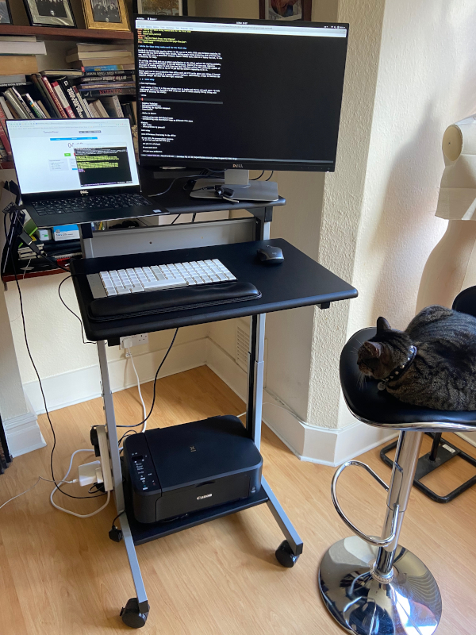

2019-03-23

I've been wanting to write about my experience with remote work and how simple mindfulness techniques had a huge impact on my work quality. Now with Covid-19 sending a lot of people around me into forced remote work and with bad news pouring through every device with a screen around us, I felt the urgency to write it more than ever.
2017-08-07

OpenResty lets you extend Nginx with Lua, a popular, embedded language. Setting up the development environment is time consuming when Openresty is compiled locally, making collaboration harder. This blog post will show you a Docker based tool to start hacking with server side Lua.
2017-07-13
Culture is a big part of the carbon based entities that do pretty much all of the computer programming these days. This blog post is my first take on the other fluffy aspects of software development. I'll argue why being a language fundamentalist won't safeguard you from producing a bad system.
2016-10-10
This blog post shows how a culture of data sharing and transparency in government institutions, fosters important and unexpected changes in society. To illustrate this point, I'm going to talk about Melhor da Zona, a web app that lets you search the best driving schools in your area.
2015-06-21
In this blog post, I'll show you two Cellular Automata algorithms used in Forest Fire Simulation. The models differ in the way they use the GPU architecture to boost performance. The first model was implemented in a trivial way, without much concern for the unique memory access pattern of the GPU. The second algorithm addresses this issue and outperforms the first by two orders of magnitude.
2015-03-20

In my last post, I introduced a CFD code which solved a partial differences equation implemented in JavaScript. The starting point, was to use a parallel computational task and distribute it among several browsers with Webrtc. In this post, I'll show you how I accomplished just that.
2015-02-27

I did a little experiment with WebRTC and a CFD (Computational Fluid Dynamics) solver I wrote. I wanted to see what could be done with webRTC and browser parallel computing. First, I needed a problem that was computationally intense and suitable to parallelization. CFD suited that class of problems and plus, coming from mechanical engineering, it was a type of problem I was decently familiar with.